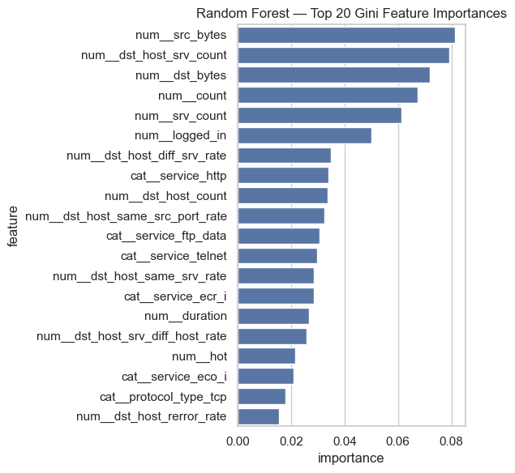
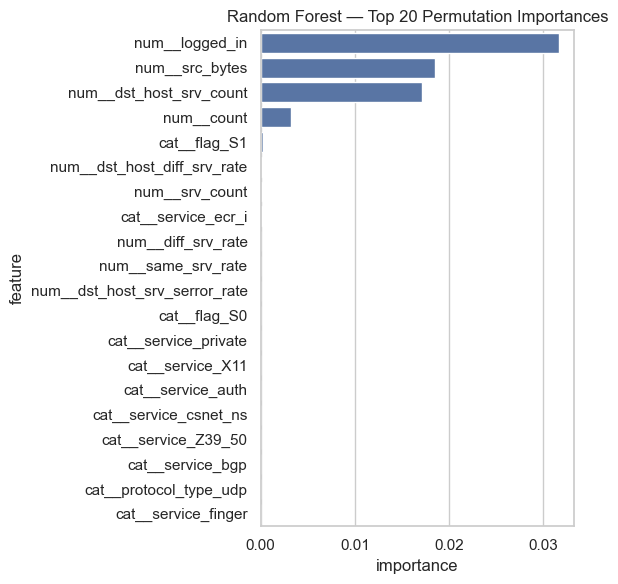
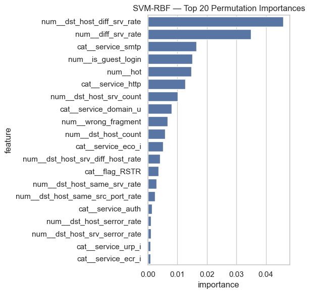
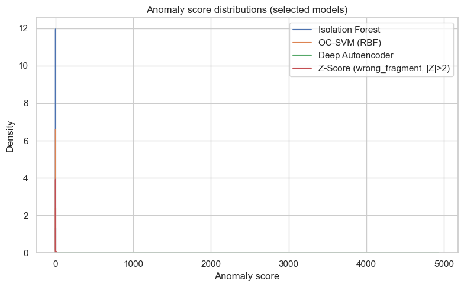
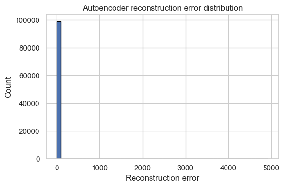
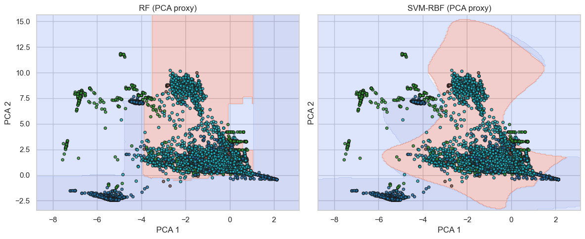

import warnings
warnings.filterwarnings("ignore")Week 06 — Final Analysis, Explainability & Reporting
import os, sys, time
from pathlib import Path
this_dir = Path.cwd()
project_root = this_dir.parent if this_dir.name == "notebooks" else this_dir
sys.path.append(str(project_root))import numpy as np
import pandas as pd
import matplotlib.pyplot as plt
import seaborn as sns
from sklearn.decomposition import PCA
# Use a clean seaborn style
sns.set(style="whitegrid")
# Project paths
this_dir = Path.cwd()
project_root = this_dir.parent if this_dir.name == "notebooks" else this_dir
sys.path.append(str(project_root))
from src.utils import Paths, set_global_seed
set_global_seed(42)
paths = Paths().ensure()
# Derive a robust reports root (Week 03–06)
reports_root = getattr(paths, "reports", project_root / "reports")
wk3_dir = reports_root / "week_03"
wk4_dir = reports_root / "week_04"
wk6_dir = reports_root / "week_06"
wk6_dir.mkdir(parents=True, exist_ok=True)
print("Project root:", project_root)
print("Reports root:", reports_root)
print("Week 03 reports:", wk3_dir)
print("Week 04 reports:", wk4_dir)
print("Week 06 reports:", wk6_dir)Project root: C:\Users\mehra\Final_Project
Reports root: C:\Users\mehra\Final_Project\reports
Week 03 reports: C:\Users\mehra\Final_Project\reports\week_03
Week 04 reports: C:\Users\mehra\Final_Project\reports\week_04
Week 06 reports: C:\Users\mehra\Final_Project\reports\week_06# Load processed arrays from Week 01
X_train_path = paths.data_proc / "X_train.npy"
X_test_path = paths.data_proc / "X_test.npy"
y_train_path = paths.data_proc / "y_train.npy"
y_test_path = paths.data_proc / "y_test.npy"
X_train = np.load(X_train_path)
X_test = np.load(X_test_path)
y_train = np.load(y_train_path)
y_test = np.load(y_test_path)
print("X_train:", X_train.shape, "X_test:", X_test.shape)
# binary labels (0=normal, 1=attack) from Week 04 logic
from collections import Counter
class_counts = Counter(y_train)
normal_label = max(class_counts, key=class_counts.get)
print("Treating label", normal_label, "as NORMAL (0). All others = ATTACK (1).")
def to_binary(y, normal):
return np.where(y == normal, 0, 1)
y_train_bin = to_binary(y_train, normal_label)
y_test_bin = to_binary(y_test, normal_label)
print("Binary train counts:", Counter(y_train_bin))
print("Binary test counts:", Counter(y_test_bin))X_train: (395216, 115) X_test: (98805, 115)
Treating label 0 as NORMAL (0). All others = ATTACK (1).
Binary train counts: Counter({np.int64(0): 313166, np.int64(1): 82050})
Binary test counts: Counter({np.int64(0): 78292, np.int64(1): 20513})# Load Week 03 & Week 04 prediction files
from pathlib import Path
def _load_csv_if_exists(path: Path, label: str):
if not path.exists():
print(f"{label} not found at {path} — returning None.")
return None
df = pd.read_csv(path)
print(f"{label} loaded from {path} with shape {df.shape}")
return df
wk3_unsup = _load_csv_if_exists(
wk3_dir / "week03_unsupervised_predictions.csv",
"Week 03 unsupervised predictions"
)
wk4_unsup = _load_csv_if_exists(
wk4_dir / "week04_unsupervised_predictions.csv",
"Week 04 unsupervised/semi-supervised predictions"
)
wk4_sup = _load_csv_if_exists(
wk4_dir / "week04_supervised_predictions.csv",
"Week 04 supervised predictions"
)
print("\nSummary:")
print(" Week 03 unsupervised df:", None if wk3_unsup is None else wk3_unsup.shape)
print(" Week 04 unsupervised df:", None if wk4_unsup is None else wk4_unsup.shape)
print(" Week 04 supervised df:", None if wk4_sup is None else wk4_sup.shape)
from IPython.display import display
if wk3_unsup is not None:
print("\nWeek 03 unsupervised head:")
display(wk3_unsup.head())
if wk4_unsup is not None:
print("\nWeek 04 unsupervised head:")
display(wk4_unsup.head())
if wk4_sup is not None:
print("\nWeek 04 supervised head:")
display(wk4_sup.head())Week 03 unsupervised predictions loaded from C:\Users\mehra\Final_Project\reports\week_03\week03_unsupervised_predictions.csv with shape (98257, 4)
Week 04 unsupervised/semi-supervised predictions loaded from C:\Users\mehra\Final_Project\reports\week_04\week04_unsupervised_predictions.csv with shape (296415, 4)
Week 04 supervised predictions loaded from C:\Users\mehra\Final_Project\reports\week_04\week04_supervised_predictions.csv with shape (395220, 3)
Summary:
Week 03 unsupervised df: (98257, 4)
Week 04 unsupervised df: (296415, 4)
Week 04 supervised df: (395220, 3)
Week 03 unsupervised head:| model | y_true_bin | y_pred_bin | score | |
|---|---|---|---|---|
| 0 | Z-Score (wrong_fragment, |Z|>2) | 0 | 0 | 0.100112 |
| 1 | Z-Score (wrong_fragment, |Z|>2) | 0 | 0 | 0.100112 |
| 2 | Z-Score (wrong_fragment, |Z|>2) | 0 | 0 | 0.100112 |
| 3 | Z-Score (wrong_fragment, |Z|>2) | 0 | 0 | 0.100112 |
| 4 | Z-Score (wrong_fragment, |Z|>2) | 0 | 0 | 0.100112 |
Week 04 unsupervised head:| model | y_true_bin | y_pred_bin | score | |
|---|---|---|---|---|
| 0 | Isolation Forest | 0 | 0 | 0.0 |
| 1 | Isolation Forest | 1 | 1 | 1.0 |
| 2 | Isolation Forest | 0 | 0 | 0.0 |
| 3 | Isolation Forest | 1 | 1 | 1.0 |
| 4 | Isolation Forest | 0 | 0 | 0.0 |
Week 04 supervised head:| model | y_true | y_pred | |
|---|---|---|---|
| 0 | Random Forest (baseline) | 0 | 0 |
| 1 | Random Forest (baseline) | 4 | 4 |
| 2 | Random Forest (baseline) | 0 | 0 |
| 3 | Random Forest (baseline) | 4 | 4 |
| 4 | Random Forest (baseline) | 0 | 0 |
Feature Names & Models
# Feature names via preprocessor
feature_names = None
try:
import joblib
pre_path = paths.data_proc / "preprocessor.joblib"
pre = joblib.load(pre_path)
feature_names = list(pre.get_feature_names_out())
print("Loaded feature names from preprocessor:", len(feature_names))
except Exception as e:
print("Could not load preprocessor or feature names:", e)
# Fall back to simple numeric names
feature_names = [f"f{i}" for i in range(X_train.shape[1])]
print("Using generic feature names:", len(feature_names))Loaded feature names from preprocessor: 115import joblib
rf_model = None
svm_model = None
ae_model = None
rf_path = getattr(paths, "models", project_root / "models") / "week04_rf.joblib"
svm_path = getattr(paths, "models", project_root / "models") / "week04_svm.joblib"
ae_path = getattr(paths, "models", project_root / "models") / "week04_ae.joblib"
for name, p in [("RF", rf_path), ("SVM", svm_path), ("AE", ae_path)]:
print(f"{name} expected at:", p)
try:
if rf_path.exists():
rf_model = joblib.load(rf_path)
print("Loaded RF model.")
else:
print("RF model file not found.")
except Exception as e:
print("Could not load RF model:", e)
try:
if svm_path.exists():
svm_model = joblib.load(svm_path)
print("Loaded SVM model.")
else:
print("SVM model file not found.")
except Exception as e:
print("Could not load SVM model:", e)
try:
if ae_path.exists():
ae_model = joblib.load(ae_path)
print("Loaded Autoencoder model.")
else:
print("Autoencoder model file not found.")
except Exception as e:
print("Could not load Autoencoder model:", e)RF expected at: C:\Users\mehra\Final_Project\models\week04_rf.joblib
SVM expected at: C:\Users\mehra\Final_Project\models\week04_svm.joblib
AE expected at: C:\Users\mehra\Final_Project\models\week04_ae.joblib
Loaded RF model.
Loaded SVM model.
Loaded Autoencoder model.Import explainability utilities
- Random Forest feature importance (Gini & permutation)
- Permutation importance for SVM-RBF
- Unsupervised visualizations (PCA + anomaly scores)
- PCA decision boundary plots
from src.explain import (
compute_rf_feature_importance,
compute_permutation_importance,
plot_anomaly_score_distributions,
plot_reconstruction_error_hist,
compute_pca_embedding,
plot_pca_dbscan_like,
plot_pca_decision_boundaries,
)Random Forest
- Gini-based feature importance
- Permutation importance on a test subset
it shows which features matter most to the RF decision function.
# Random Forest feature importance & permutation importance
if rf_model is None:
print("RF model not loaded — skipping RF explainability. "
"Save your Random Forest as 'week04_rf.joblib' in paths.models to enable this section.")
else:
# Gini importance
rf_imp_df = compute_rf_feature_importance(rf_model, feature_names)
fig, ax = plt.subplots(figsize=(6, 6))
sns.barplot(data=rf_imp_df.head(20), x="importance", y="feature", ax=ax)
ax.set_title("Random Forest — Top 20 Gini Feature Importances")
plt.tight_layout()
fig_path = wk6_dir / "rf_gini_importance_top20.png"
fig.savefig(fig_path, dpi=150)
print("Saved:", fig_path)
# Permutation importance on a test set
rf_perm_df = compute_permutation_importance(
rf_model,
X_test,
y_test,
feature_names,
n_repeats=10,
max_samples=3000,
random_state=42,
)
fig, ax = plt.subplots(figsize=(6, 6))
sns.barplot(data=rf_perm_df.head(20), x="importance", y="feature", ax=ax)
ax.set_title("Random Forest — Top 20 Permutation Importances")
plt.tight_layout()
fig_path = wk6_dir / "rf_permutation_importance_top20.png"
fig.savefig(fig_path, dpi=150)
print("Saved:", fig_path)
rf_imp_df.head()Saved: C:\Users\mehra\Final_Project\reports\week_06\rf_gini_importance_top20.png
Saved: C:\Users\mehra\Final_Project\reports\week_06\rf_permutation_importance_top20.png

SVM and Autoencoder
- For SVM-RBF, I compute permutation importance on the test set. This shows which input features the decision function relies on most, even though the kernel mapping itself remains opaque.
- For the Autoencoder, I treat the reconstruction error distribution as the main explanation signal: which samples are hardest to reconstruct, how far into the tail an anomalous point sits, and how thresholds would trade precision vs recall.
# SVM-RBF permutation importance
if svm_model is None:
print("SVM model not loaded — skipping SVM permutation importance. "
"Save your SVM as 'week04_svm.joblib' in paths.models to enable this section.")
else:
try:
svm_perm_df = compute_permutation_importance(
svm_model,
X_test,
y_test,
feature_names,
n_repeats=10,
max_samples=3000,
random_state=42,
)
fig, ax = plt.subplots(figsize=(6, 6))
sns.barplot(data=svm_perm_df.head(20), x="importance", y="feature", ax=ax)
ax.set_title("SVM-RBF — Top 20 Permutation Importances")
plt.tight_layout()
fig_path = wk6_dir / "svm_permutation_importance_top20.png"
fig.savefig(fig_path, dpi=150)
print("Saved:", fig_path)
svm_perm_df.head()
except Exception as e:
print("SVM permutation importance computation failed:", e)Saved: C:\Users\mehra\Final_Project\reports\week_06\svm_permutation_importance_top20.png
Unsupervised Models
Using the saved results from Week 03 and Week 04, I visualize:
- DBSCAN-style separation in PCA space (binary normal vs anomaly by DBSCAN)
- Anomaly score distributions for LOF, Isolation Forest, etc.
- Reconstruction error histogram for the Autoencoder
# PCA embedding for visualization
X_test_pca = compute_pca_embedding(X_test, n_components=2, random_state=42)
X_test_pca.shape(98805, 2)# Anomaly score distributions for unsupervised models (Week 03 + Week 04)
if wk3_unsup is None and wk4_unsup is None:
print("No unsupervised score tables loaded — skipping anomaly score distributions.")
else:
fig = plot_anomaly_score_distributions(
wk3_unsup=wk3_unsup,
wk4_unsup=wk4_unsup,
max_models=6,
)
fig_path = wk6_dir / "unsupervised_anomaly_score_distributions.png"
fig.savefig(fig_path, dpi=150, bbox_inches="tight")
print("Saved:", fig_path)Saved: C:\Users\mehra\Final_Project\reports\week_06\unsupervised_anomaly_score_distributions.png
# Autoencoder reconstruction error histogram (Week 04 unsupervised)
if wk4_unsup is None:
print("Week 04 unsupervised df not loaded — skipping AE reconstruction error histogram.")
else:
mask_ae = wk4_unsup["model"].str.contains("Autoencoder", case=False, na=False)
if not mask_ae.any():
print("No Autoencoder rows in Week 04 unsupervised df.")
else:
ae_scores = wk4_unsup.loc[mask_ae, "score"].values
fig = plot_reconstruction_error_hist(ae_scores)
fig_path = wk6_dir / "ae_reconstruction_error_hist.png"
fig.savefig(fig_path, dpi=150, bbox_inches="tight")
print("Saved:", fig_path)Saved: C:\Users\mehra\Final_Project\reports\week_06\ae_reconstruction_error_hist.png
PCA Decision Boundaries for RF and SVM
To findout how the supervised models separate classes:
- Compute a 2D PCA projection of
X_trainandX_test. - Fit lightweight proxy models (RF/SVM) on the PCA coordinates only.
- Plot their decision regions and the true labels.
This gives an interpretable view of decision boundaries in a low-dimensional space.
# PCA-based decision boundary visualization
fig = plot_pca_decision_boundaries(
X_train=X_train,
y_train=y_train,
X_test=X_test,
y_test=y_test,
feature_names=feature_names,
random_state=42,
)
fig_path = wk6_dir / "pca_decision_boundaries_rf_svm.png"
fig.savefig(fig_path, dpi=150, bbox_inches="tight")
print("Saved:", fig_path)Saved: C:\Users\mehra\Final_Project\reports\week_06\pca_decision_boundaries_rf_svm.png
Transparency vs Accuracy
From the Week 05 metric tables and the Week 06 explainability plots, I can summarize:
- Random Forest (RF)
- Strong overall macro F1 and robust detection across families.
- Gini and permutation importances reveal a small subset of features (e.g., duration, connection counts, service type, error flags) driving most decisions.
- Interpretation burden is moderate: RF is an ensemble, but feature ranking plus simple partial reasoning about top features gives a clear story.
- Strong overall macro F1 and robust detection across families.
- SVM-RBF
- Competitive or slightly better performance on some families, but the decision function is more opaque.
- We rely on permutation importance as a post-hoc explanation: it highlights which inputs matter most, but does not provide per-sample attributions. This makes communication to non-experts somewhat harder than for RF.
- Competitive or slightly better performance on some families, but the decision function is more opaque.
- Deep Autoencoder
- Excellent at flagging rare or unseen patterns via reconstruction error.
- Direct interpretability is low; we primarily use reconstruction error histograms and anomaly-score distributions to understand how “far” a sample is from normal traffic. Feature-level attributions are deliberately not attempted here to keep the setup robust.
- Excellent at flagging rare or unseen patterns via reconstruction error.
- Classical unsupervised models (DBSCAN, LOF, Isolation Forest)
- Provide intuitive geometric views (dense vs. sparse regions, anomaly score tails).
- However, binary outputs alone are not directly tied to specific feature semantics; they complement, but do not replace, supervised classifiers.
Overall trade-off:
- As we move from tree-based models → kernel methods → deep models, raw detection performance may improve, but so does the interpretability burden.
- A practical IDS design will often favor a hybrid stack:
- RF (or similar) as the main, explainable classifier with clear feature-importance stories.
- Deep / unsupervised models as anomaly detectors with well-chosen thresholds and clear triage pathways.
Real-World IDS Implications
- False-positive budget
- Even a small false-positive rate (e.g., 0.5%) can overwhelm analysts at scale.
- Use anomaly score distributions and calibration checks to set thresholds that keep FPs within an acceptable budget (e.g., N alerts per day).
- Even a small false-positive rate (e.g., 0.5%) can overwhelm analysts at scale.
- Threshold tuning
- For anomaly detectors (Isolation Forest, LOF, Autoencoder, etc.), treat thresholds as policy knobs, not fixed constants.
- Revisit them regularly based on alert volumes and feedback from incident responders.
- For anomaly detectors (Isolation Forest, LOF, Autoencoder, etc.), treat thresholds as policy knobs, not fixed constants.
- Model maintenance & drift
- Network behavior evolves: new services, user patterns, and attack techniques appear.
- Schedule periodic retraining / revalidation (e.g., monthly or quarterly) and monitor simple drift indicators (feature distributions, reconstruction error shifts).
- Network behavior evolves: new services, user patterns, and attack techniques appear.
- Role specialization of models
- Use supervised models (RF/SVM) for labeled attack families and clear triage explanations based on feature importances.
- Use unsupervised / deep models as canaries to catch unusual behavior that does not match existing signatures.
- Feature-importance plots and PCA views help justify why a particular flow was flagged, supporting analyst trust and facilitating handoff to incident responders.
- Use supervised models (RF/SVM) for labeled attack families and clear triage explanations based on feature importances.